Hello everyone. I am Molin from ECP CIS.
Today we will talk about how to build a Mini-GPT from scratch.
The goal is simple: use a small model to understand the Transformer architecture and how it works.
Let's get started.
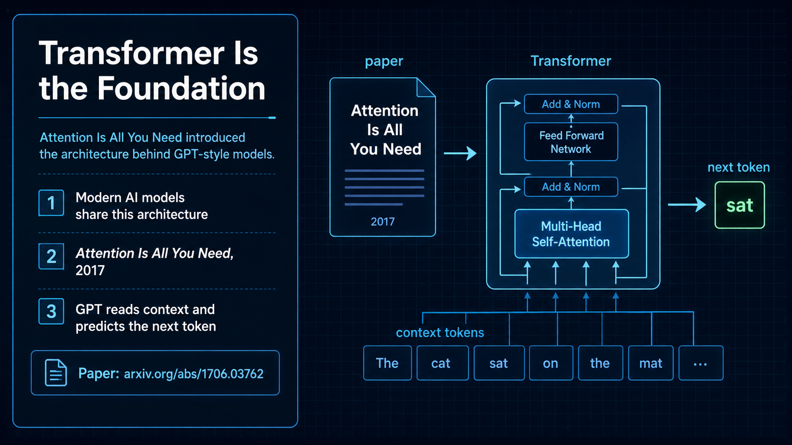
Before we build anything, let us set the map.
Many modern AI models are based on the Transformer architecture. The Transformer was introduced in the paper Attention Is All You Need in 2017.
For a GPT-style model, the main job is simple to say: read the tokens so far, and predict the next token.
The paper link is on the slide, so you can find the original source after the talk.
In this talk, we will see the pieces that make this possible.
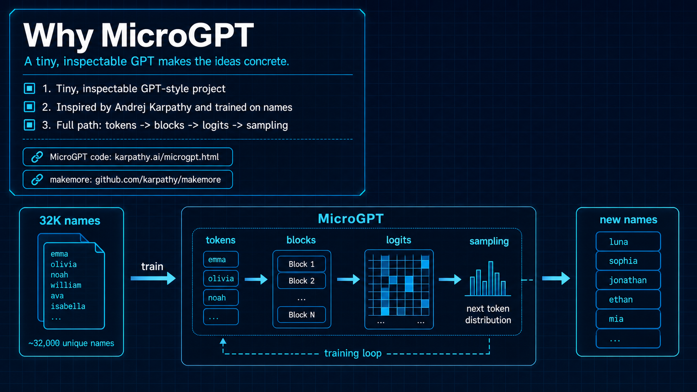
If we only talk about concepts, Transformer can feel too abstract.
So we will use a small project and build it step by step. The project is inspired by Andrej Karpathy's MicroGPT code and makemore style.
The model trains on about 32K names. After training, it can generate new name-like strings.
The source links are on the slide, so you can explore the original code and dataset later.
The task is small, but it contains the same path: tokens, Transformer blocks, logits, loss, and sampling.
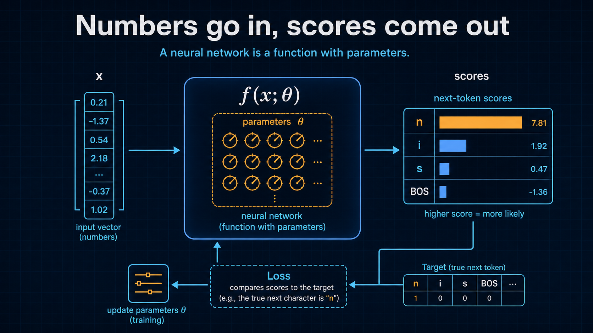
Before we say Transformer, let us start with a simple idea. A neural network is a function.
The input is a group of numbers. The function has parameters, also called weights. The output is another group of numbers.
For our Mini-GPT, the output numbers are scores for possible next characters. At first these scores are bad. Training changes the parameters so the scores become more useful.
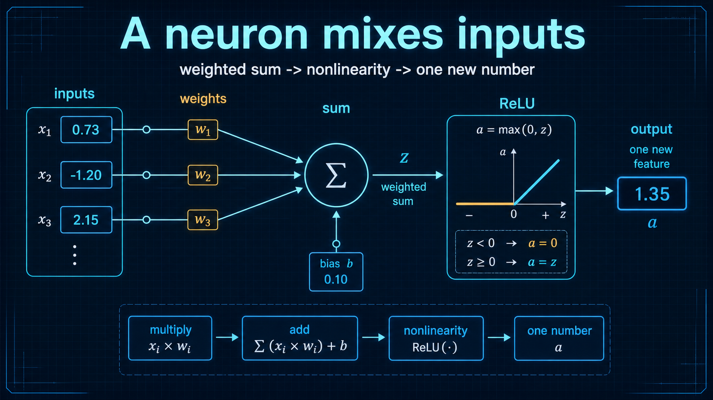
A single neuron is a very small computation. It takes several input numbers, multiplies them by weights, and adds the results.
Then it usually applies a nonlinearity. In this project, the MLP uses ReLU. ReLU is simple: negative values become zero, positive values stay positive.
One neuron is not enough for GPT, but it gives us the basic building block: weighted information plus a simple nonlinear step.
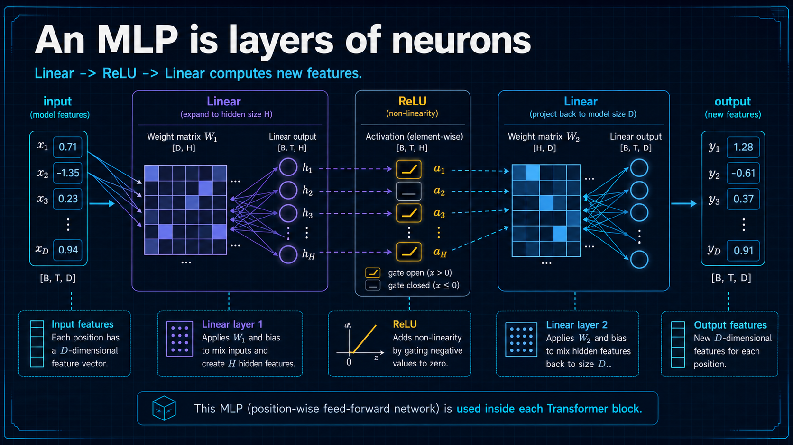
When we place many neurons side by side, we get a layer. When we stack layers, we get a small neural network called an MLP.
In our Mini-GPT block, the MLP is Linear, then ReLU, then Linear. It does not talk across time. It works inside each token position.
This is important. Attention is the part that reads other positions. The MLP is the part that computes new features at the current position.
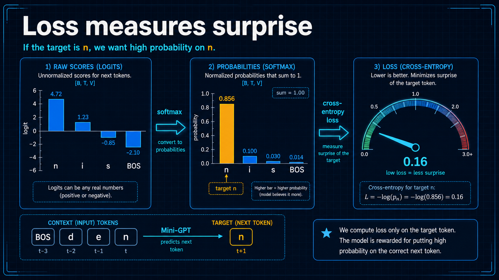
The model outputs logits. Logits are raw scores. They are not probabilities yet.
Softmax turns these scores into probabilities. If the true next character is n, then a good model gives high probability to n.
Cross-entropy loss is high when the correct character has low probability. It is low when the correct character has high probability. So loss gives us one number to improve.
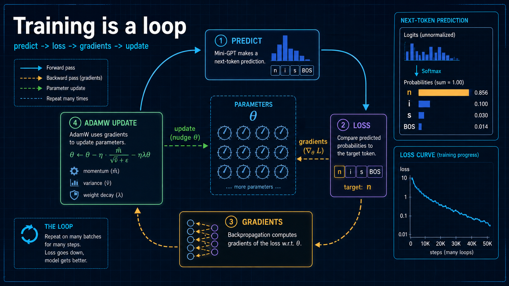
Training is not mysterious. We run the model, compute loss, compute gradients, and update the parameters.
Backpropagation tells each parameter how it affected the loss. AdamW uses those gradients to move the parameter a small amount.
After many updates, the model becomes less surprised by real training examples. In our case, it becomes better at predicting the next character in a name.
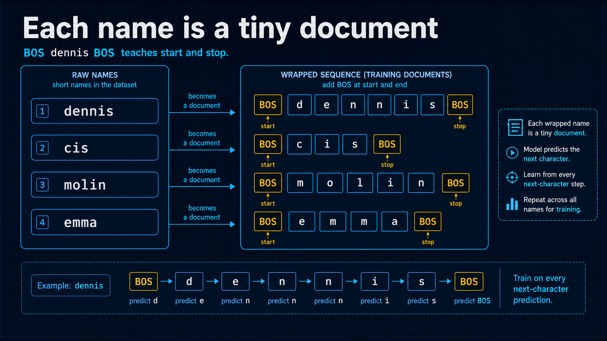
Now we connect the neural network to the data. In a MicroGPT-style name model, each name is a tiny document.
We add a special token called BOS. It can mean beginning of sequence, and in this small project it also marks the end.
So the name dennis becomes BOS, d, e, n, n, i, s, BOS. This one sequence creates many next-character training examples.
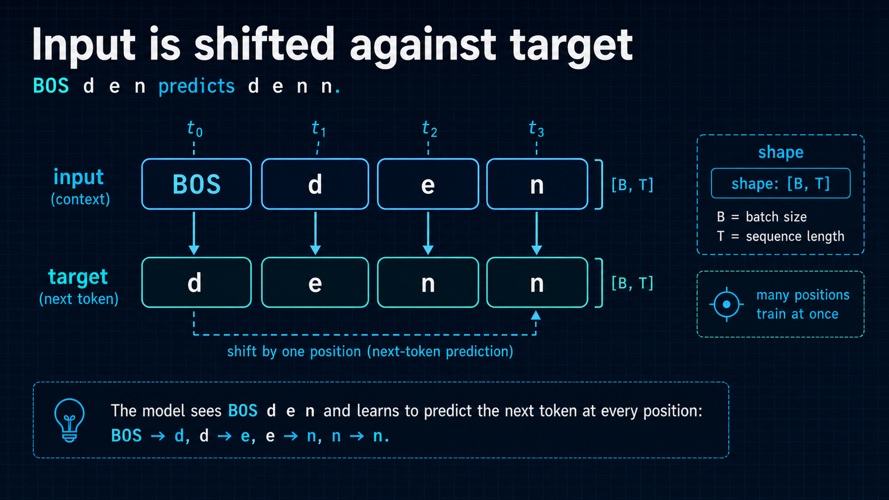
The next-token task is made by shifting the sequence by one step.
The input row might be BOS, d, e, n. The target row is d, e, n, n. At each position, the model predicts the next character.
This is very efficient for learning. One short name gives many small prediction tasks. The Transformer learns from all positions at the same time.
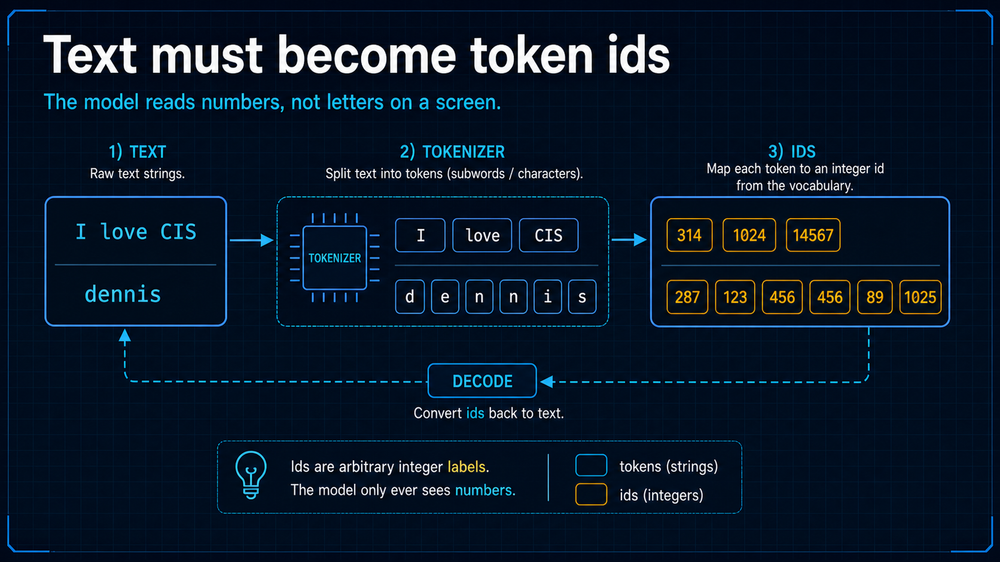
A tokenizer is the boundary between human text and model input.
The model cannot read the string directly. The tokenizer splits the text into tokens, maps each token to an integer id, and can later decode ids back into text.
For our small model, tokens are characters. For large GPT systems, tokens are often pieces of words. The idea is the same: text becomes ids.
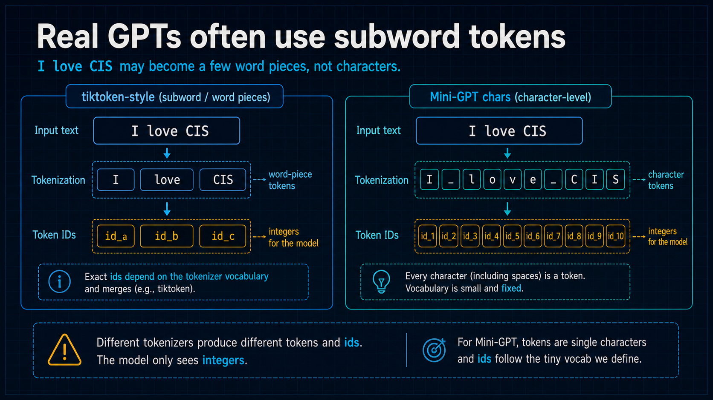
Let us use the text I love CIS. A production GPT tokenizer, such as tiktoken, may split this into word pieces. For example, I, space-love, and space-CIS may be separate tokens depending on the vocabulary.
Our Mini-GPT tokenizer is simpler. It splits the same text into characters.
The split is different, but the final interface is the same. The model receives integer ids. It does not receive the original text string.
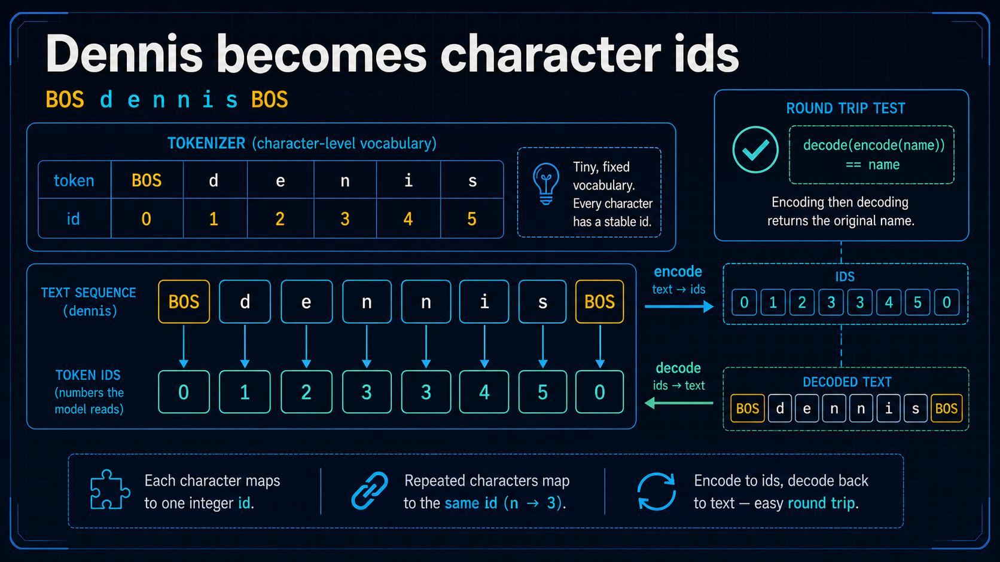
For the name Dennis, we lowercase it for the tiny model and treat each character as a token.
The wrapped sequence is BOS, d, e, n, n, i, s, BOS. Each symbol has an id from the tokenizer vocabulary.
This is simple enough to test directly. If we encode and then decode a name, we should get the same name back, except for the special tokens we choose to add or remove.
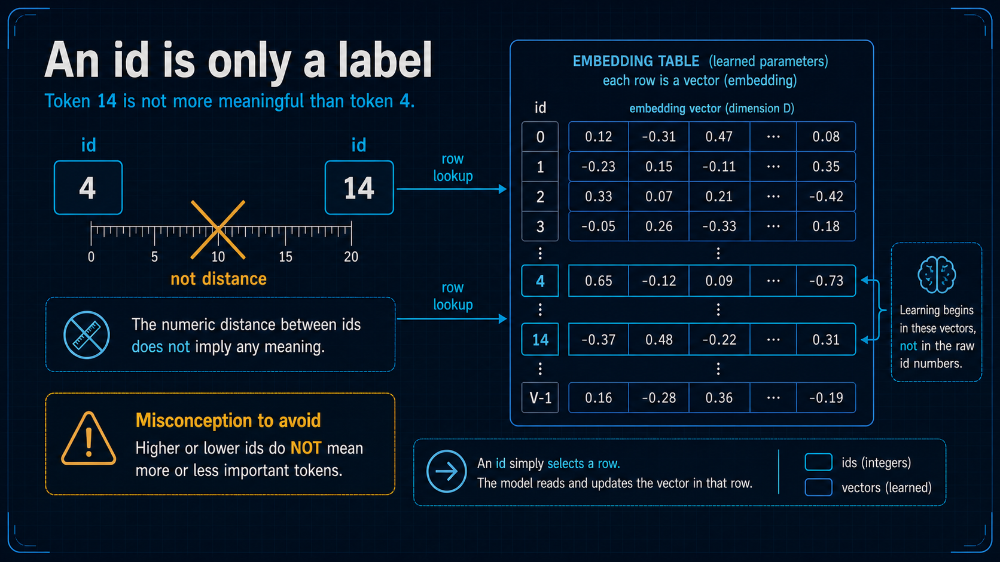
A very common mistake is to think token ids have meaning by themselves.
They do not. If d has id 4 and n has id 14, that does not mean n is ten units away from d in a useful language space.
The id is just an address. It chooses a row in an embedding table. The vector in that row is what the model will learn and use.
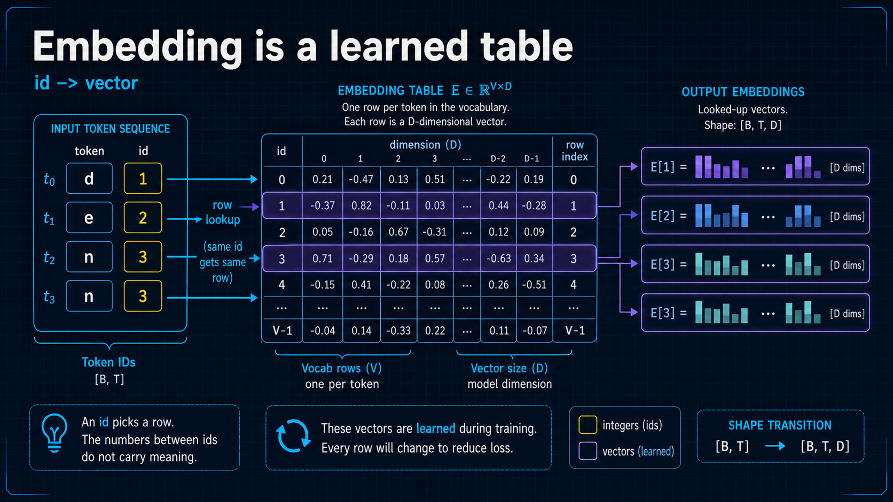
The token embedding table has one row for each token in the vocabulary.
When the model sees token id 4, it selects row 4 from the table. That row is a vector. The vector length is the model dimension.
At the start, these vectors are random. During training, the vectors move so useful character patterns become easier for the Transformer to compute.
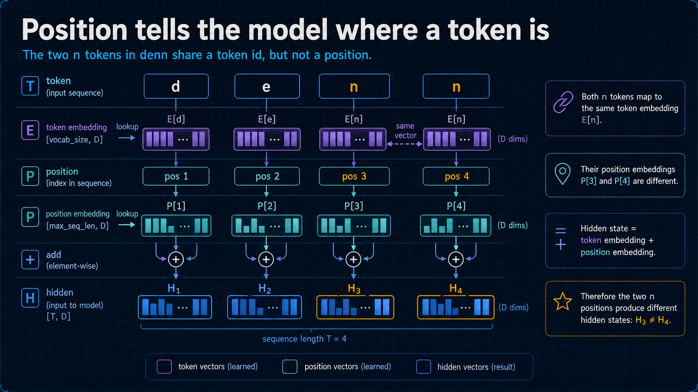
A token embedding tells the model what symbol it is. But the model also needs to know where the symbol is.
In the prefix denn, the two n characters have the same token id. Without position information, they would start with the same vector.
So Mini-GPT adds a position embedding. Token vector plus position vector becomes the first hidden state for each position.
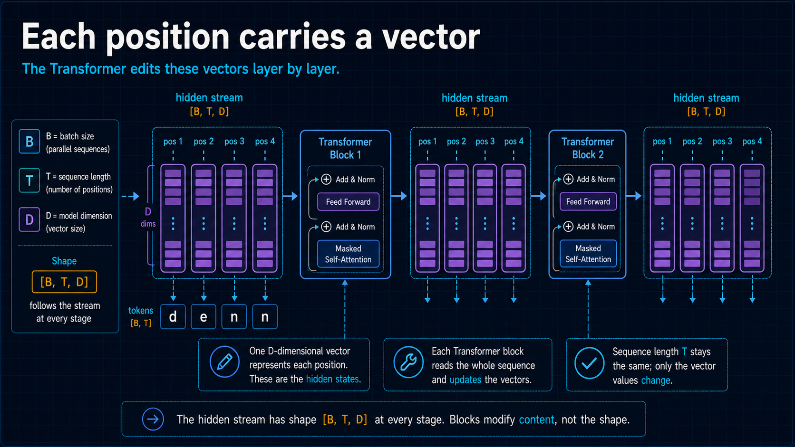
After token and position embeddings are added, the model has a hidden stream.
The shape is B, T, D. B is batch size. T is the number of positions. D is the vector size.
Each position has its own vector. The Transformer block will update these vectors. Attention lets positions share information. The MLP computes new features inside each position.
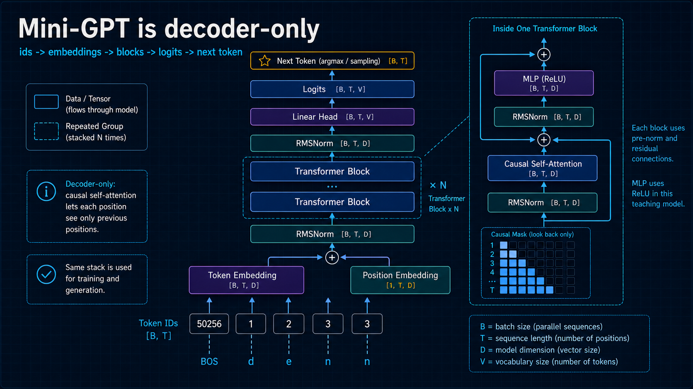
Now we can look at the full MicroGPT-style architecture.
It is decoder-only. That means there is no separate encoder. The model reads the previous tokens and predicts the next token.
The path is simple to say: token ids become embeddings, embeddings pass through repeated Transformer blocks, a final norm prepares the vectors, and a linear head produces logits for the next token.
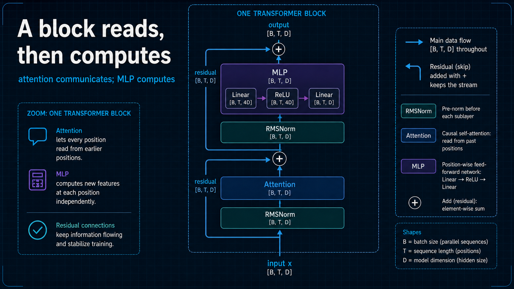
A Transformer block has two main jobs.
First, attention lets one position read information from earlier positions. Second, the MLP computes new features inside each position.
RMSNorm helps keep vector scale stable. Residual connections add the new information back to the old stream. This makes the model easier to train and easier to think about.
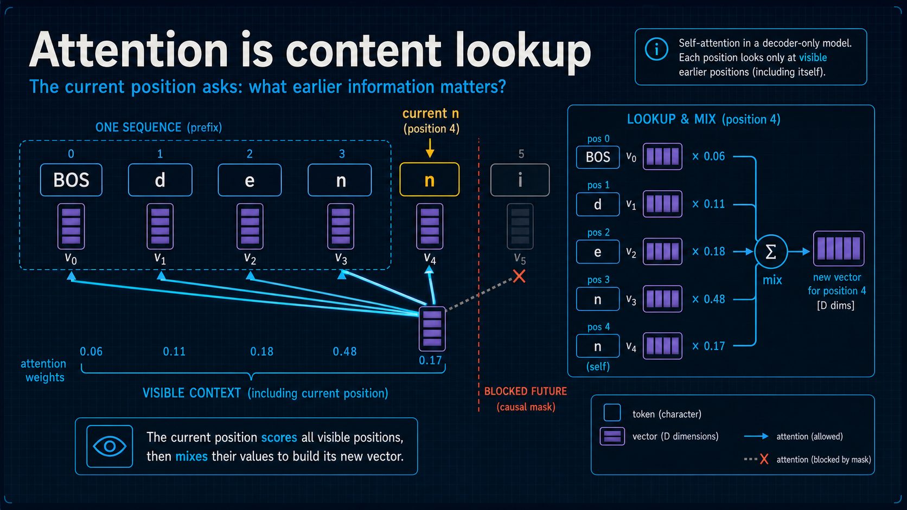
Attention is easier to understand as content lookup.
Imagine the final n in the prefix denn. To predict the next character, it may need to read earlier context. It can look left at d, e, and the previous n.
Attention gives the model a learned way to score those visible positions and mix their information into the current vector.
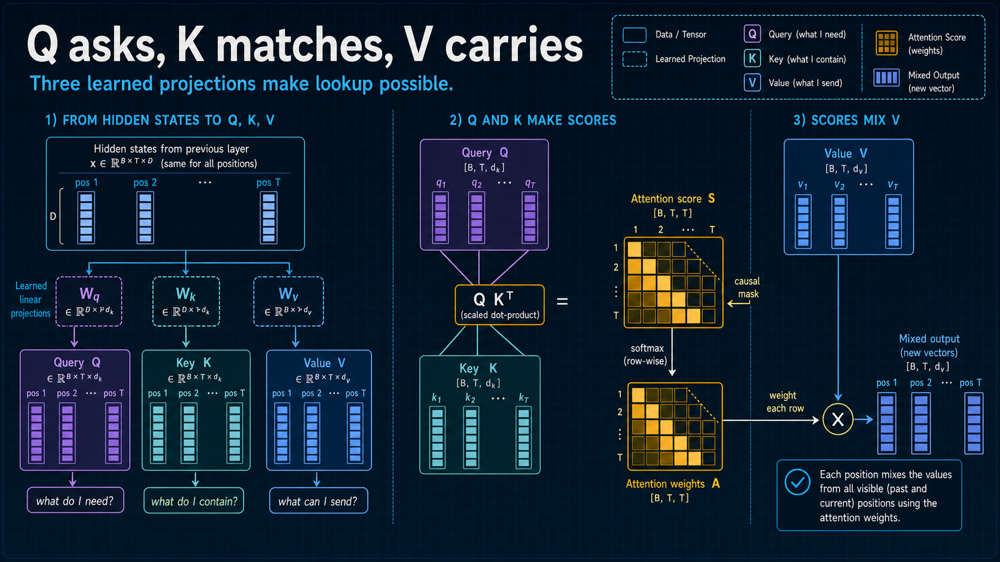
For each position, the model makes three vectors: query, key, and value.
The query is like a question from the current position: what information do I need? The key is like a description of each visible position: what do I contain?
The value is the information that will be sent if that position is useful. Q and K decide the attention weights. V is what gets mixed.
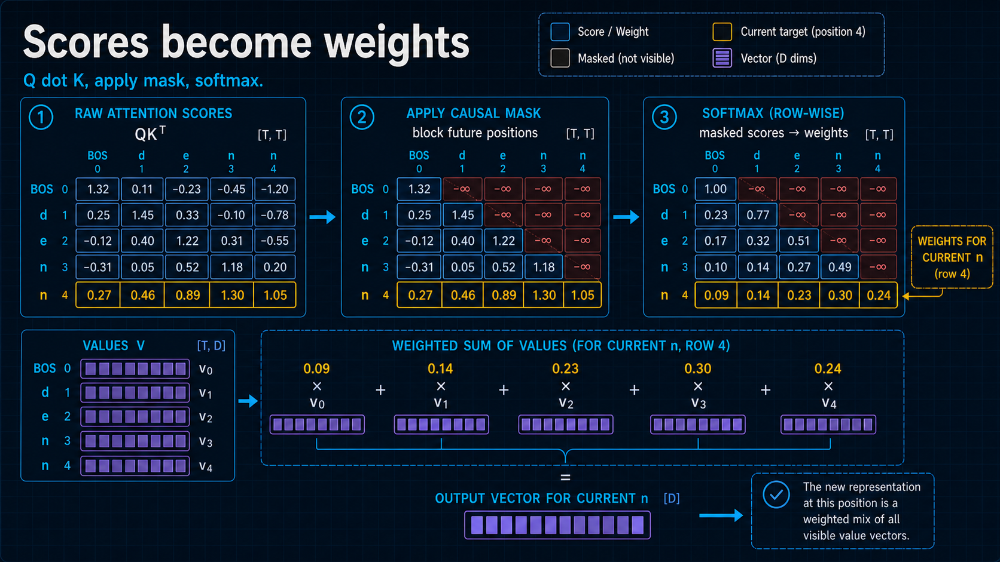
The attention score is usually made with a dot product between query and key.
If the query and key match well, the score is high. If they do not match, the score is low.
Then the causal mask blocks future positions. Finally, softmax turns the visible scores into weights. Those weights decide how much value information will be mixed into the current position.
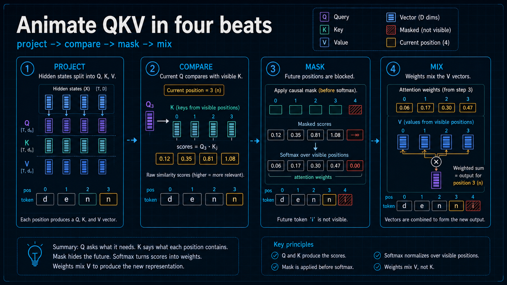
This slide is a clear plan for the QKV animation.
First, each hidden vector is projected into Q, K, and V. Second, the current query compares with the keys from visible positions. Third, the mask removes future positions. Fourth, the final weights mix the value vectors.
Even if we show it as an animation, the idea is still simple: ask, match, block the future, and mix useful information.
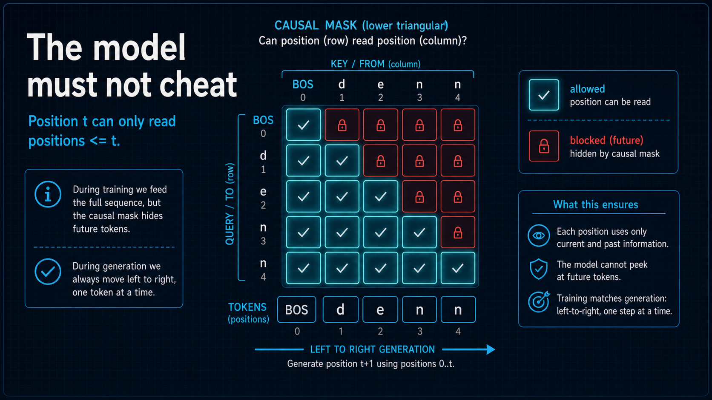
During training, we give the model a whole window of tokens. Without a mask, a position could look at the answer on its right.
That would be cheating. GPT must learn to predict from the past, because during generation the future does not exist yet.
The causal mask solves this. Each position can read itself and earlier positions, but it cannot read later positions.
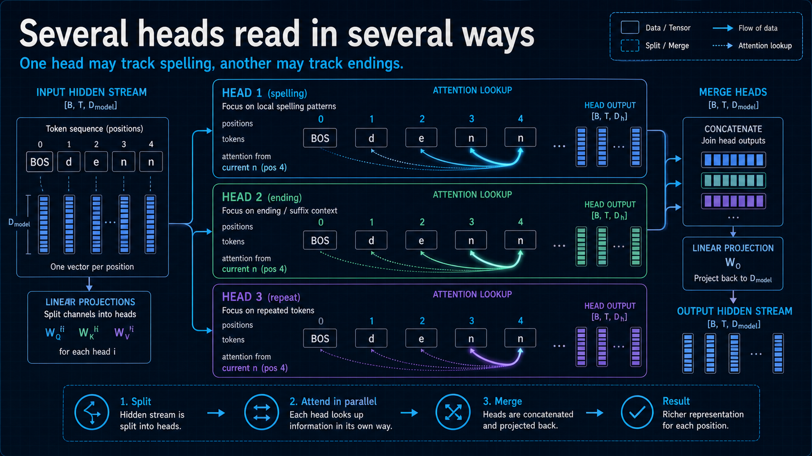
Multi-head attention means the model runs several attention operations in parallel.
Each head gets part of the vector channels. One head might learn local spelling rhythm. Another might learn likely endings. Another might notice repeated letters like n n.
After the heads read context in different ways, their outputs are merged back into one vector stream.
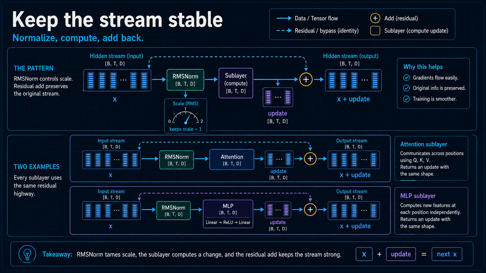
RMSNorm and residual connections are not the flashiest parts, but they matter.
RMSNorm keeps vector scale under control before attention or the MLP. The residual connection adds the new result back to the old stream.
This means each block can make an edit instead of replacing everything. That makes deep stacks easier to train.
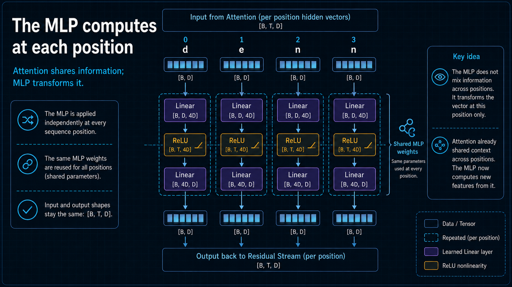
Now the earlier MLP idea comes back.
Inside each Transformer block, after attention has shared information, the MLP computes new features at each position. It uses Linear, ReLU, and Linear.
The same MLP weights are applied to every position. So attention is communication across positions, while the MLP is computation inside each position.
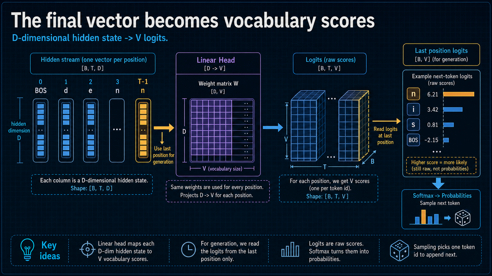
After the Transformer blocks, the model still has one vector for each position.
A final linear head maps each vector from model dimension D to vocabulary size V. That gives one logit score for each possible next token.
During generation, we usually read the logits at the final position. Those logits tell us what the model thinks the next token could be.
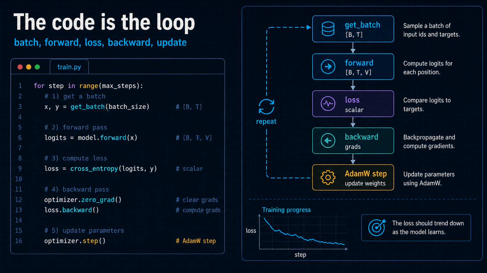
Now the code should look familiar.
The training loop gets a batch of token ids and targets. It runs the model forward. It computes the loss. Then it clears old gradients, runs backward, and calls the optimizer step.
This is the same loop we saw near the beginning. The only difference is that now the function is a Transformer instead of a simple MLP.
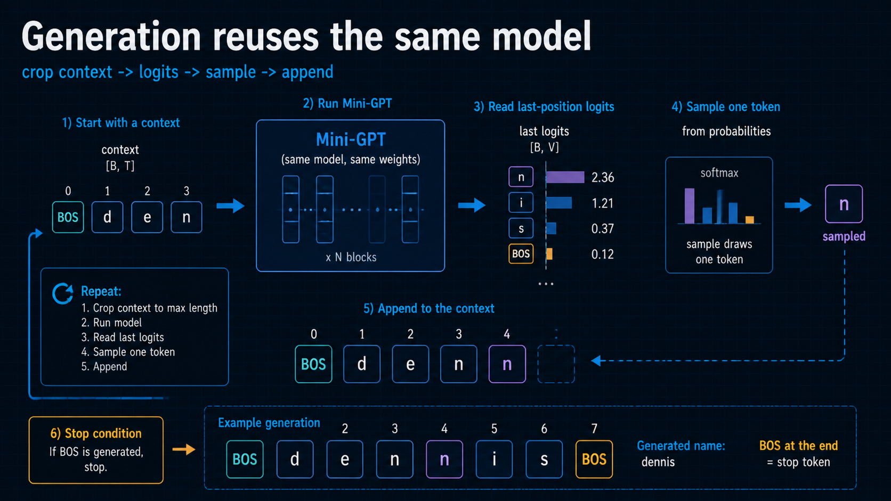
Generation is not a new model. It reuses the same forward pass.
We start from BOS or from a prompt like den. We crop the context if it is longer than block size. We run the model and read the logits at the last position.
Then we sample one token, append it, and repeat. When the model samples BOS again, we stop and decode the name.
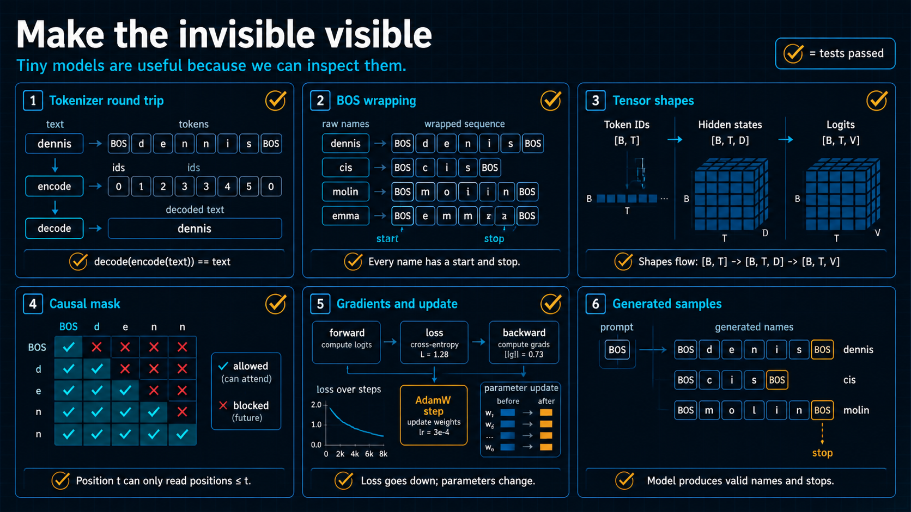
The best part of a tiny implementation is visibility.
We can test that the tokenizer round-trips text correctly. We can print shapes like B, T, and D. We can inspect the causal mask. We can watch loss go down and samples become more name-like.
This habit is useful even when working with larger systems. Always connect the concept to something you can check.
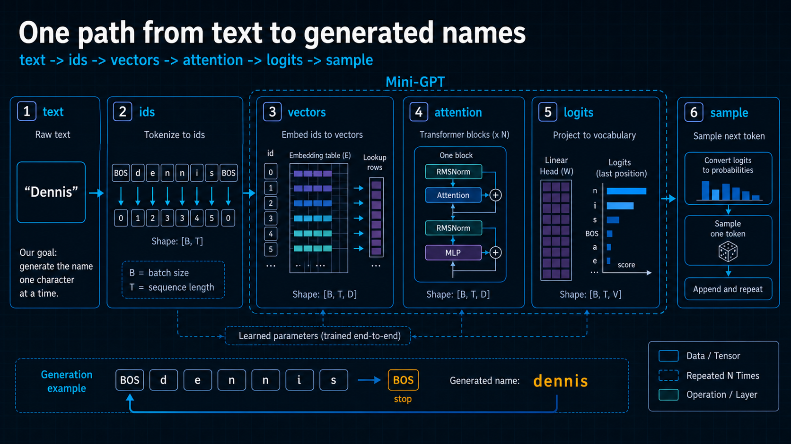
Let us recap the whole path.
A neural network is a trainable function. Our tokenizer turns text into ids. Embeddings turn ids and positions into vectors. Transformer blocks update those vectors. Attention lets positions read earlier context. The linear head produces logits, and sampling turns logits into new characters.
That is the core idea of GPT, shown in a tiny model we can inspect.